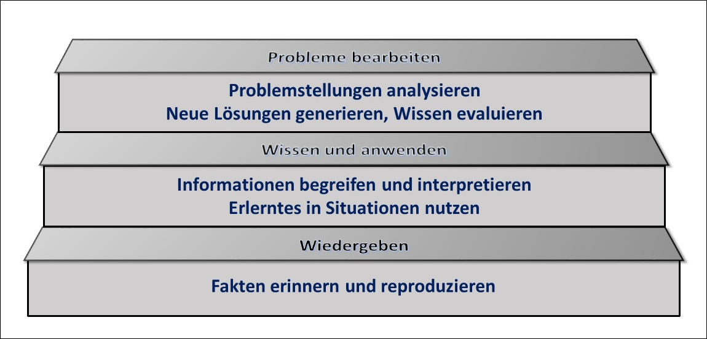

Sie haben gesehen, dass sich der Kompetenzerwerb in Stufen vollzieht und zur Veranschaulichung das Taxonomiemodell von Metzger & Nüesch (2004) herangezogen.

Von Biggs & Tang (2011) wurden (in englischer Sprache) Handlungsverben (Performanzverben) publiziert, mit deren Hilfe kognitive kompetenzorientierte Lernziele auf den einzelnen Taxonomiestufen beschrieben werden können.
Hier sehen Sie eine Auswahl deutschsprachiger Äquivalente.
Wiedergeben |
Wissen und anwenden |
Probleme bearbeiten |
| auflisten, aufzählen, aufzeichnen | aufzeigen, ableiten, anwenden | abfassen, abgrenzen, analysieren |
| benennen, bezeichnen, definieren | ausdrücken, auseinanderhalten, ausführen | argumentieren, auswerten, beurteilen |
| finden, identifizieren, nacherzählen | auswählen, benutzen, berechnen | beweisen, bewerten, bilden, deduzieren |
| nennen, skizzieren, wiedergeben | beschreiben, darstellen, demonstrieren | diskutieren, einordnen, einschätzen |
| wiederholen, zitieren. | deuten, differenzieren, durchführen | entscheiden, entwickeln, entwerfen |
| erklären. erläutern, gliedern | evaluieren, generalisieren, generieren | |
| interpretieren,klassifizieren, nachweisen | gestalten, herleiten, Hypothesen aufstellen | |
| ordnen, transferieren, übersetzen | identifizieren, integrieren, konstruieren | |
| unterscheiden, veranschaulichen, , verwenden | konzipieren, modifizieren, planen, | |
| zeigen, wählen, zusammenfassen | prognostizieren, recherchieren, strukturieren | |
| validieren, vergleichen zuordnen | ||
Diese Zusammenstellung ist selbstverständlich nicht abschließend. Bei der Erstellung eines Lernzielkatalogs ist diese Liste jedoch hilfreich, um eine sprachliche Eintönigkeit zu vermeiden.